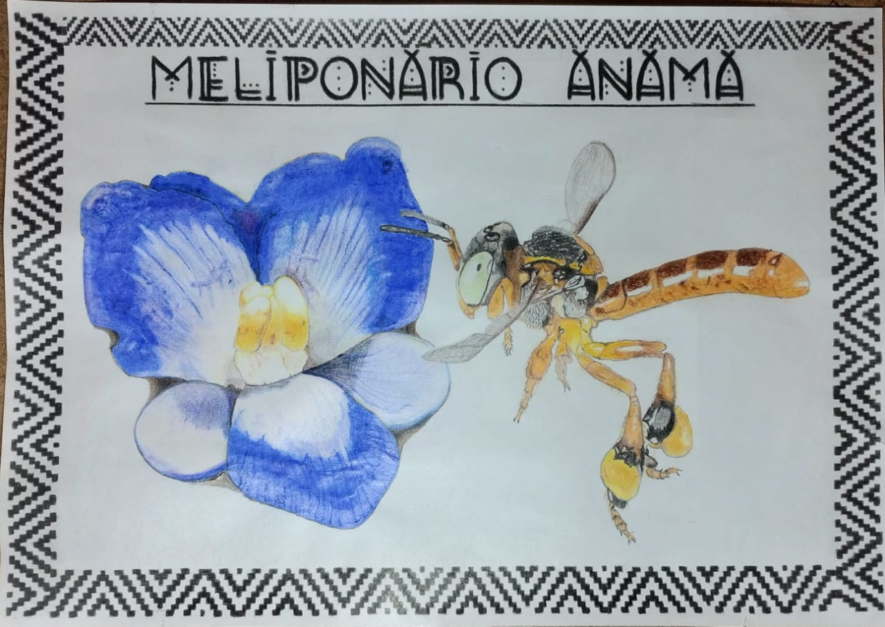
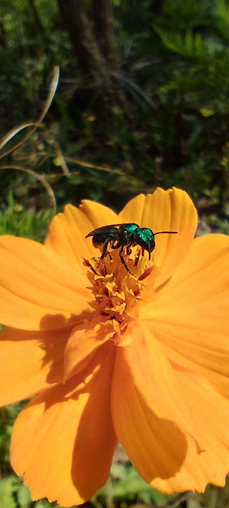
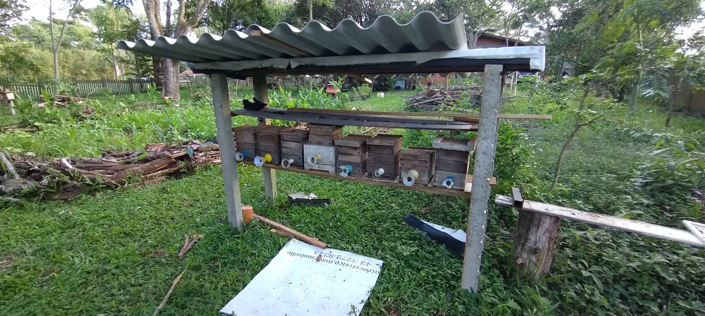
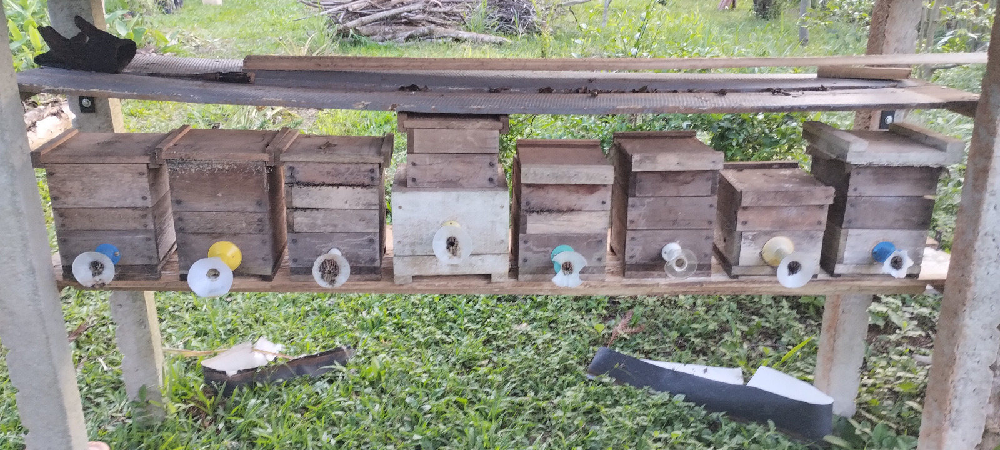
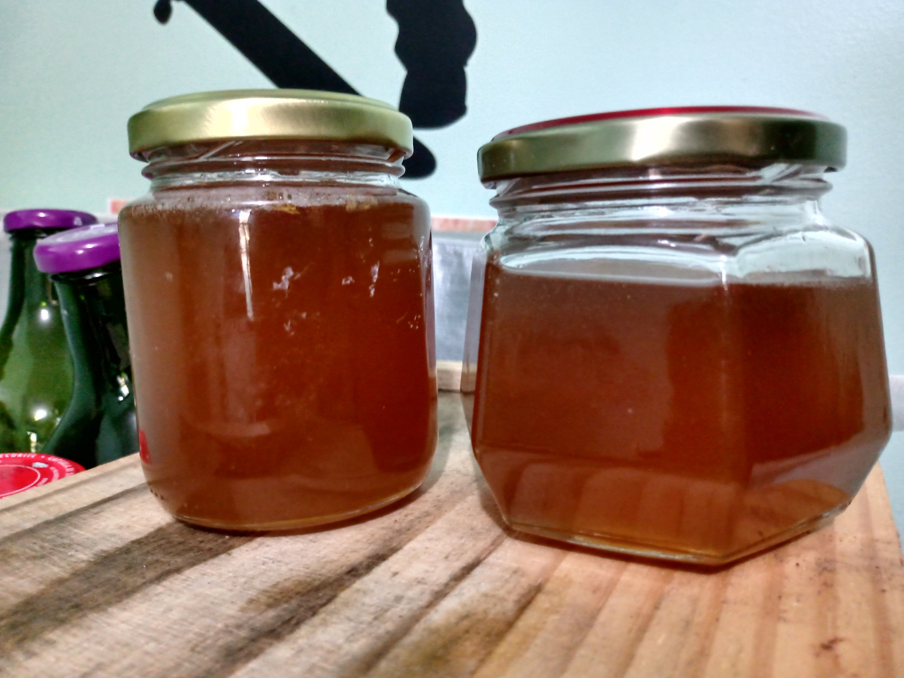
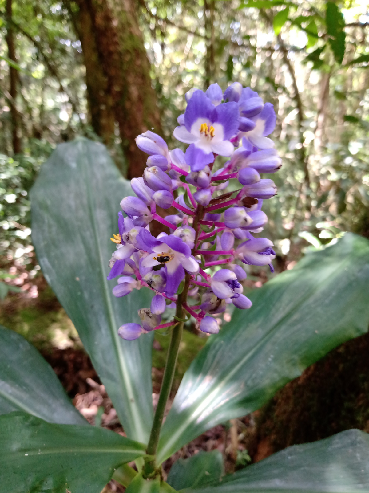
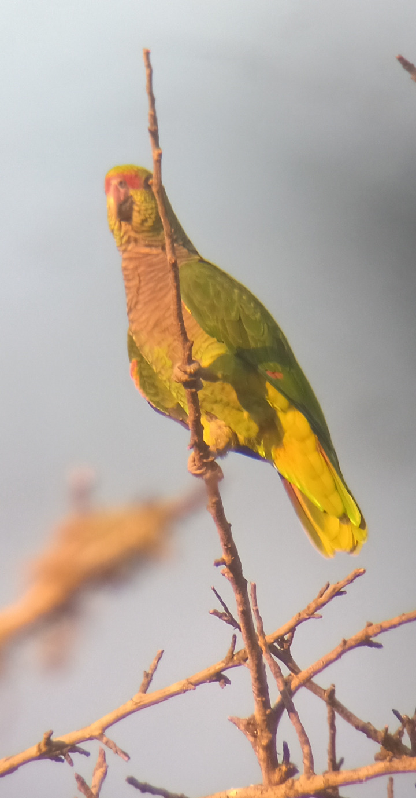

colhido com respeito · mata atlântica ·
prazer! Telêmaco Borba, PR
Esse é o
Meliponário Ânãmã
mel de abelhas nativas sem ferrão 🐝
arrasta pro lado →

Meliponário Ânãmã · Mel de Abelhas Nativas
Fazenda
Mel de abelhas nativas sem ferrão 🐝
Jataí e Mandaçaia · Mata Atlântica
Criação que respeita a abelha e a floresta
📩 Peça seu mel pela DM
prazer! Telêmaco Borba, PR
mel de abelhas nativas sem ferrão 🐝
arrasta pro lado →
antes do Instagram, o papel
caderno de campo · o saber
arrasta pro lado →

olha ela trabalhando!diário da mata · a floresta

onde as caixas vivem"a mata assina cada pote"
o guia · vem ver

pode chegar perto, não tem ferrãodo pote pra mesa

colheita da estaçãocaderno de campo · o saber
cítrico, leve, quase um suco de flor
encorpado, final levemente ácido
arrasta pro lado →
o guia · vem ver

o mel é o alimento da colôniadiário da mata · a floresta

vizinho do meliponário